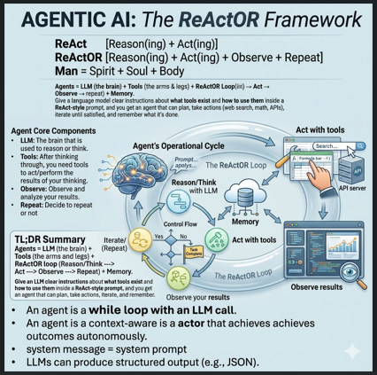

Scientific reasoning
Agents interpret goals, decompose technical problems, select methods, and explain results in scientific context.
Procelligence AI builds intelligent systems that reason, simulate, optimize, and automate complex scientific and engineering workflows.

Procelligence connects language models, engineering models, domain tools, memory, and workflow automation in one reusable intelligence layer.
Agents interpret goals, decompose technical problems, select methods, and explain results in scientific context.
Agents interact with simulators, solvers, databases, optimization engines, and enterprise workflows.
Every action is observed, evaluated, stored, and used to decide what should happen next.
ReActOR extends the familiar ReAct pattern into a continuous operational loop designed for scientific and engineering work.
Reason about the objective, constraints, evidence, and next best action.
Act using software tools, scientific models, APIs, and automation workflows.
Observe outputs, errors, uncertainty, and real-world feedback.
Repeat until the goal, stopping criterion, or human decision point is reached.
Context-aware agents for analysis, planning, execution, and technical decision support.
Mechanistic, data-driven, hybrid, multiphysics, and reduced-order models.
Automated setup, execution, comparison, interpretation, and reporting of simulation studies.
Single- and multi-objective search, Bayesian optimization, design exploration, and control.
Dynamic computational representations linked to data, models, estimates, and decisions.
Persistent knowledge of assumptions, experiments, model history, observations, and outcomes.
The platform is domain-flexible. Biologics manufacturing is one application area within a broader computational science and engineering vision.
Process understanding, modeling, optimization, digital twins, and intelligent manufacturing workflows.
Reaction engineering, transport, separations, process intensification, and autonomous operations.
Batteries, hydrogen, carbon management, resource efficiency, and advanced energy systems.
Materials discovery, scale-up, process design, equipment intelligence, and manufacturing optimization.
Procelligence AI is developing a new class of computational systems in which scientific reasoning, engineering models, software tools, memory, and automation work together.
The goal is not only to answer technical questions, but to help scientists and engineers move from a question to an evidence-based action.